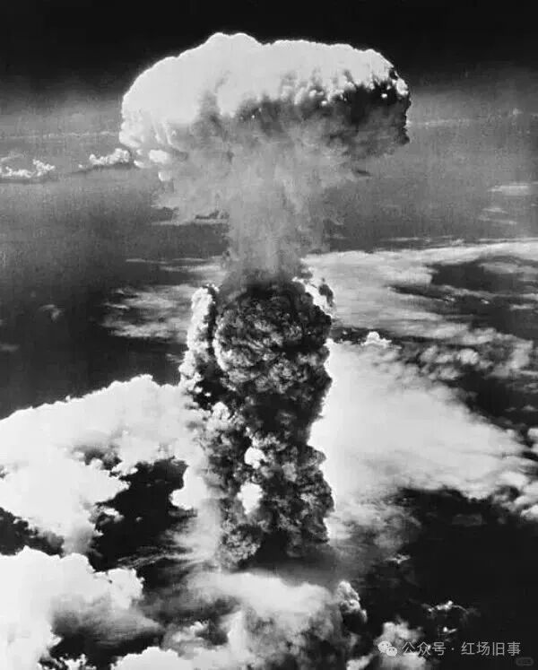
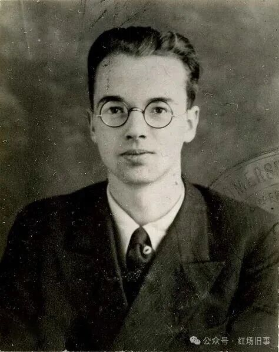
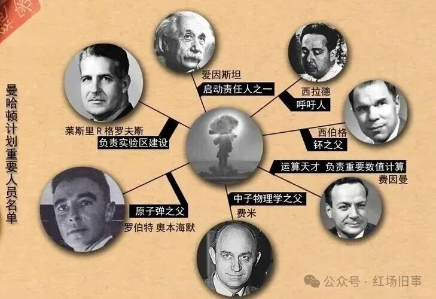
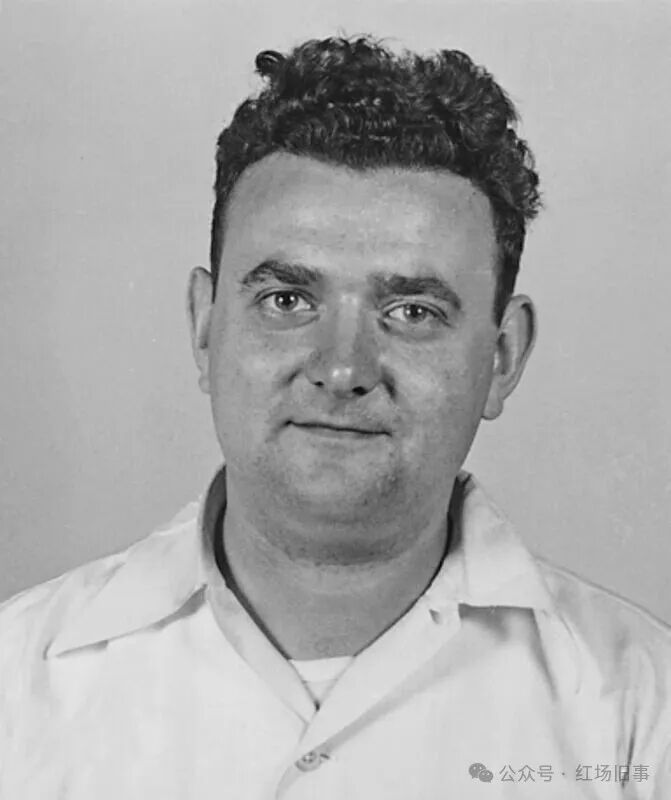
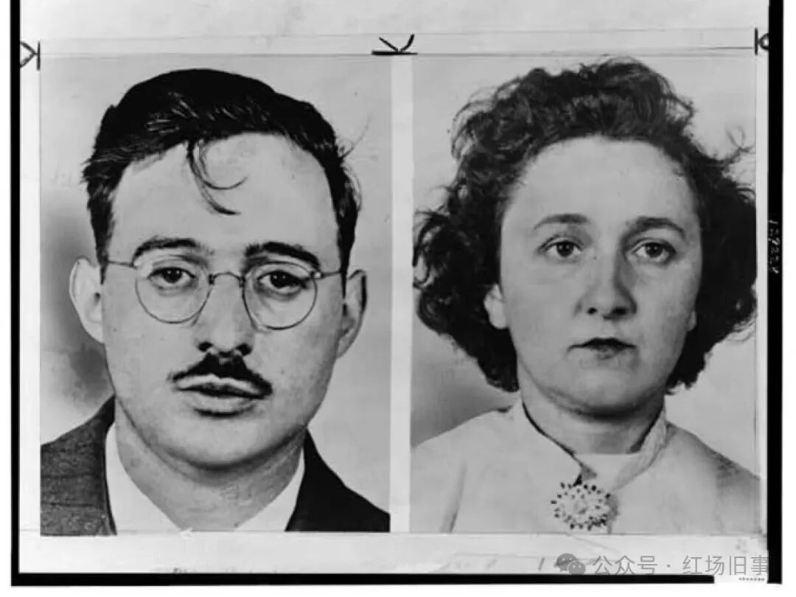
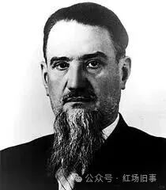
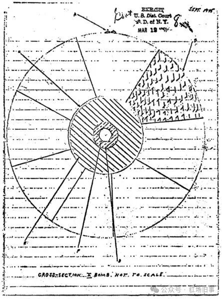

楔子：1949年苏联核爆的震惊1949年8月29日，哈萨克草原上一声巨响，苏联第一颗原子弹试爆成功。

消息传到华盛顿，白宫陷入死一般的沉默。美国情报机构曾信誓旦旦地预测：苏联至少还需要五年才能拥有原子弹。杜鲁门总统刚刚向国民保证过“美国仍将垄断核武器若干年”。现在，这个神话破灭了。惊慌失措的美国人本能地想到一个答案：一定是间谍偷走了我们的秘密。此后数年，联邦调查局和国会非美活动调查委员会倾巢而出，追查那个传说中的“原子间谍网”。追查的结果，引出了一个叫克劳斯·福克斯的物理学家，和一对叫罗森伯格的普通夫妇。他们的命运，从此被绑在一起。

克劳斯·福克斯
一、福克斯的潜伏：信仰驱动的科学家
克劳斯·福克斯，1911年生于德国，19岁进入莱比锡大学，20岁加入德国共产党。希特勒上台后，他流亡英国，在布里斯托尔大学和爱丁堡大学完成物理学研究，成为理论物理学领域的新星。1941年，福克斯被吸收进英国“合金管”计划——英国的原子弹研究项目。同年秋天，他主动走进苏联驻伦敦大使馆，对联络员说：“我有关于新型强大武器的情报，希望能帮助反法西斯事业。”这不是金钱交易。福克斯事后在法庭上说，他相信“苏联是唯一真正对抗纳粹的力量”，也相信原子能不应被一个国家垄断，因为这关系到全人类的命运。他是那个时代典型的“信仰驱动型间谍”。1943年底，福克斯作为英国科学家代表团成员前往美国洛斯阿拉莫斯实验室，直接参与曼哈顿计划。在那里，他接触到了原子弹设计的核心机密：铀-235的提纯方法、钚弹的内爆原理、中子引发器的构造。

从1944年2月起，福克斯通过联络员将情报源源不断送往莫斯科。他提供了原子弹的详细设计图纸、理论运算，甚至试验数据。苏联核计划负责人库尔恰托夫后来评价：“这些情报使我们在许多问题上重新考虑自己的观点，确立了苏联物理学三个新的工作方向。”1945年6月，福克斯提前告知莫斯科：美国将于7月进行首次原子弹试验。这份情报被直接呈报斯大林。
二、罗森伯格夫妇：信使还是替罪羊？
福克斯的情报通过苏联外交系统传递，中间需要大量联络员。其中一条线索，牵出了纽约一对普通夫妇——朱利叶斯与艾瑟尔·罗森伯格。朱利叶斯是电气工程师，苏联共青团成员，1942年左右被苏联情报机构招募。他的妻弟大卫·格林格拉斯在洛斯阿拉莫斯实验室担任机械师，能够接触部分核武器部件的图纸。

大卫·格林格拉斯格林格拉斯后来承认，他曾向朱利叶斯提供原子弹内爆透镜的草图和一些数据，朱利叶斯将这些信息转交给苏联联络员。但他从未直接参与原子弹的核心设计，也没有接触过福克斯那样的顶级机密。1950年，福克斯在英国被捕并供认间谍活动，线索指向联络员哈里·戈尔德。戈尔德被捕后供出格林格拉斯。格林格拉斯为了自保，开始与联邦调查局合作。关键转折点出现在格林格拉斯的证词中。他最初说姐姐艾瑟尔没有参与，但在妻子露丝的“提醒”下，突然“回忆起”艾瑟尔曾用打字机打印过情报材料。这份证词，成为将艾瑟尔送上电椅的唯一证据。20世纪90年代，格林格拉斯向记者承认：“对我而言，妻子比姐姐更重要。我不会为了姐姐而牺牲自己的妻子和孩子。”他承认关于姐姐打字的那段证词是编造的。
三、电椅悲剧：政治风暴中的牺牲品
1951年3月，罗森伯格案开庭审理。主审法官欧文·考夫曼在宣判死刑时说：“我认为你们的罪行比谋杀还要严重。你们的行为使俄国人比我们最优秀的科学家的预言提前好几年制成了原子弹。由于你们的背叛，共产党人因此侵略朝鲜，造成了5万多人的伤亡。”这段判决词充满了时代烙印——朝鲜战争正在激烈进行，麦卡锡主义席卷全美，反共情绪达到顶峰。但在法律上，考夫曼的论断站不住脚：美国当时并未正式处于战争状态，1917年《间谍法》的死刑条款本不适用于和平时期。更关键的是技术事实：福克斯才是真正传递核心机密的人，而他只被判了14年监禁。格林格拉斯作为直接参与者，因配合检方只判了15年。罗森伯格夫妇从未接触原子弹核心设计，却被送上了电椅。

朱利叶斯和艾瑟尔·罗森伯格
1953年6月19日，朱利叶斯和艾瑟尔在纽约星星监狱被处决。艾瑟尔经历两次电击才死亡。他们是美国和平时期唯一因间谍罪被处决的平民夫妇。爱因斯坦在临刑前呼吁宽大处理，教皇庇护十二世也发来求情信，但美国政府不为所动。
四、技术争议：苏联核弹到底提前了多久？
这是案件最大的争议点之一。福克斯的情报到底有多大价值？美国能源部20世纪90年代解密的评估报告认为，福克斯提供的信息确实帮助苏联避免了大量走弯路的尝试。但苏联科学家本身具备世界一流的理论水平，即使没有间谍情报，研制成功也只是时间问题，福克斯情报帮助苏联节省约一年时间。库尔恰托夫本人曾指出，情报资料“为在较短时间里解决这个问题提供了技术能力”。但根据俄罗斯学者后来的研究，情报帮助缩短的时间大约是一年，而非考夫曼法官所说的“好几年”。

苏联原子弹之父-库尔恰托夫
关于罗森伯格夫妇，争议更大。维诺纳计划1995年解密的电报显示，朱利叶斯确实参与了间谍活动，但艾瑟尔的名字从未出现。她是否知道丈夫的活动？可能知道。但她是否亲手传递过原子弹机密？至今没有直接证据。格林格拉斯提供的草图后来被公开——那是一张画着几个同心圆的潦草纸片，被专家称为“小孩子的涂鸦”。即便这张图是真实的，它也不具备福克斯提供的完整设计图的价值。

格林格拉斯传递的情报
下一期预告：潘科夫斯基——古巴导弹危机的“续命者”1962年10月，世界距离核战争只有一步之遥。鲜为人知的是，古巴导弹危机中，肯尼迪之所以敢对赫鲁晓夫强硬到底，是因为他手里握着一张底牌——苏军情报总局上校奥列格·潘科夫斯基。这位“双料间谍”向中情局和军情六处提供了苏联导弹的核心机密：射程数据、部署位置，甚至赫鲁晓夫的战略底牌。他为何背叛祖国？他的情报如何改变危机走向？最终暴露后，他经历了怎样的末日？下期，走进潘科夫斯基的“双面人生”。第5期 从东京到莫斯科：那条改变二战进程的情报第4期 潜伏三年，一镐毙命：那个终结“红军之父”的神秘刺客第2期 潜伏军情六处30年，死后葬在莫斯科：那个让英国情报界蒙羞的“红色幽灵”